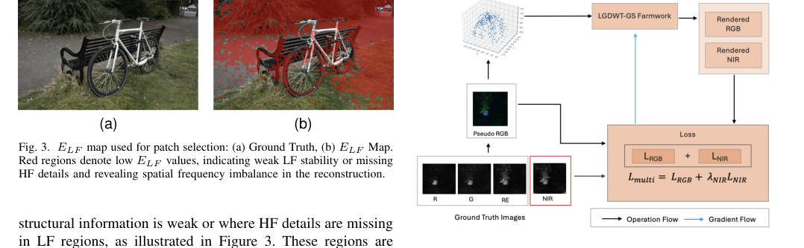
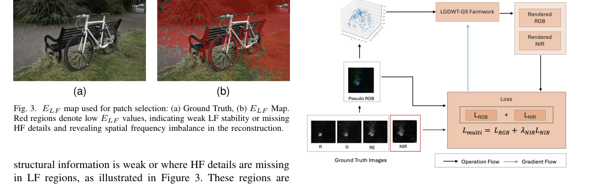
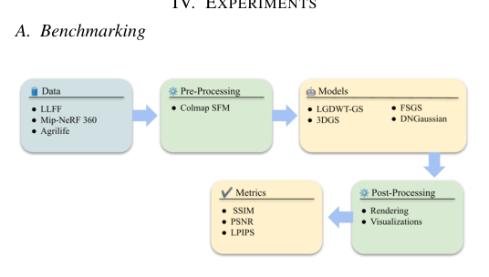
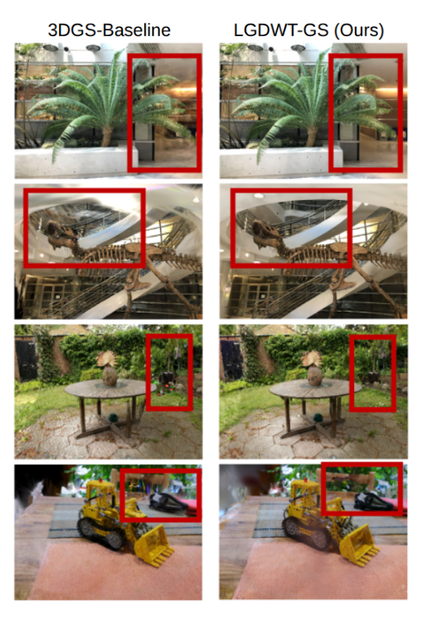

LGDWT-GS：局部和全局离散小波正则化 3D 高斯分布
简单摘要
在NeRF基础框架之上，近期方法针对少样本新视角合成提出了一系列解决方案。早期方法通常依赖强正则化先验：RegNeRF通过对未观测视角施加平滑约束来正则化几何，FreeNeRF在训练早期使用频率正则化防止高频伪影。其他方法如SparseNeRF和DietNeRF引入辅助监督——分别利用深度先验和语义一致性损失引导遮挡区域的几何。近期进展关注不依赖重外部先验的鲁棒几何适应：FrugalNeRF引入跨尺度共享方案最大化有限像素的信息效用，SPARF将少样本能力扩展到处理噪声相机位姿。3DGS通过高效可微光栅化大幅降低了NeRF类方法的训练延迟，但在稀疏视角/少样本场景中表现出特征性失效——优化过程在观测训练视角中过度重建高频细节（尤其是边缘和精细纹理），因多视图约束有限导致新视角泛化差和全局几何一致性退化。为应对这些限制，FSGS和PGDGS采用自适应渐进式稠密化策略逐步填充欠约束区域；DNGaussian和SCGaussian通过显式深度约束和结构一致性先验正则化场景几何。频域分析已被引入神经渲染——低频分量编码平滑几何和大尺度结构，高频分量对应边缘和细节外观变化。WaveNeRF和DWT-NeRF使用小波引导改进NeRF训练，DWT-GS将其应用于高斯泼溅去除高频噪声。但这些方法通常对整个图像统一应用规则，无法区分保持主结构和精炼细节的需求。

核心创新
第一，提出双分支频率感知监督策略直接集成到3DGS光栅化管线中——全局频率分支强制低频一致性以保持整体几何结构，互补的逐块分支选择性精炼高频分量以恢复局部细节而不引入过拟合。第二，区别于现有方法对整图统一应用频率规则，该方法能自适应地区分需要保持结构完整性的区域和需要精炼细节的区域。第三，将频域分析从NeRF领域系统性地迁移到3DGS稀疏视角重建中，解决了3DGS在少样本设置下高频过拟合而低频几何欠约束的核心矛盾。
技术细节
围绕 技术总览，为了获得更密集和更稳定的初始化，使用深度先验和多视图立体重建来生成额外的伪点。该公式对齐渲染图像和参考图像之间的全局频率结构，确保低频和中频内容的连贯重建，同时抑制噪声高频伪影。这种共享几何、双外观设计可促进跨光谱相干性并增强稀疏视图条件下的精细细节重建。作者这样设计，是为了把这一节的输入、约束和输出关系讲清楚。
3 方法
我们引入了 LGDWT-GS 框架，它将频域监督集成到 3DGS 管道中，以改进少样本 3D 重建。然后，我们将此框架扩展到多光谱版本，在共享 3D 几何结构下联合重建 RGB 和 NIR 模态。作者这样设计，是为了把这一节的输入、约束和输出关系讲清楚。
3.1 LGDWT-GS框架
围绕 3.1 LGDWT-GS框架，这种集成增强了大规模结构一致性和细粒度纹理恢复，而无需修改可微分泼溅渲染器。为了获得更密集和更稳定的初始化，使用深度先验和多视图立体重建来生成额外的伪点。在训练期间，可微光栅化器将这些高斯投影到图像平面中，并使用复合损失函数针对真实视图优化渲染输出，如方程 所示。作者这样设计，是为了把这一节的输入、约束和输出关系讲清楚。
$$ \mathcal{L}_{\text{total}} = \mathcal{L}_{\text{L1}} + \mathcal{L}_{\text{SSIM}} + \alpha \mathcal{L}_{\text{gDWT}} + \beta \mathcal{L}_{\text{pDWT}}. $$
这条式子是在定义一个可直接计算的中间量：右侧把相对位置、方向、权重或比例关系组合起来，左侧则把这个组合结果记成后续模块要反复使用的变量。
3.1.1 全球载重吨监管
全局 DWT 损失强制渲染图像和地面实况图像之间的大规模频率一致性，从而促进跨视图的结构稳定性。使用一级 Haar 小波变换将每个图像分解为四个频率子带。该公式对齐渲染图像和参考图像之间的全局频率结构，确保低频和中频内容的连贯重建，同时抑制噪声高频伪影。作者这样设计，是为了把这一节的输入 lazy' decoding='async' />
$$ \mathcal{L}_{\text{Global-DWT}} = \sum_{s \in \{LL, LH, HL, HH\}} w_s \, \|\widehat{\mathbf{I}}_{S} - \mathbf{I}_{S}\|_1, $$
放在“方法”这一部分看，它重点在定义或约束 L Global-DWT 这一项。这条式子是在定义一个可直接计算的中间量：右侧把相对位置、方向、权重或比例关系组合起来，左侧则把这个组合结果记成后续模块要反复使用的变量。
3.1.2 补丁式DWT监督
围绕 3.1.2 补丁式DWT监督，尽管全球监管强制执行整体频率一致性，但局部区域仍可能表现出重建不足的情况，特别是在平滑的低频区域中嵌入精细的高频细节的地方。渲染图像和地面实况图像被分为固定大小和步

$$ E_{LF}(x,y) = \frac{\|\mathbf{I}_{LL}(x,y)\|_1}{ \|\mathbf{I}_{LL}(x,y)\|_1 + \|\mathbf{I}_{HF}(x,y)\|_1}, $$
放在“方法”这一部分看。这条式子是在定义一个可直接计算的中间量：右侧把相对位置、方向、权重或比例关系组合起来，左侧则把这个组合结果记成后续模块要反复使用的变量。
$$ \mathcal{L}_{\text{Patch-DWT}} = \frac{1}{N_p}\sum_{p=1}^{N_p} \sum_{B \in \{LH, HL\}} \|\widehat{\mathbf{I}}^{\,p}_{B} - \mathbf{I}^{\,p}_{B}\|_1, $$
放在“方法”这一部分看，它重点在定义或约束 L Patch-DWT 这一项。这条式子给出了训练阶段的优化目标。阅读时可以先看左侧到底在约束什么，再区分右侧每一项对应的是重建误差、正则项还是辅助监督。
3.2 多光谱扩展
LGDWT-GS 框架经过扩展，可支持双模态重建，在共享 3D 几何结构下联合建模 RGB 和 NIR 图像。由此产生的结构即使在稀疏视图条件下也能在所有光谱带上提供可靠的几何对准。这种共享几何 7185v1/figure4_full.png'
$$ \mathcal{L}_{\text{Multi}} = \mathcal{L}_{\text{RGB}} + \lambda_{\text{NIR}}\, \mathcal{L}_{\text{NIR}}, $$
放在“方法”这一部分看，它重点在定义或约束 L Multi 这一项。这条式子是在定义一个可直接计算的中间量：右侧把相对位置、方向、权重或比例关系组合起来，左侧则把这个组合结果记成后续模块要反复使用的变量。
$$ \text{mask} = \max(\text{RGB}_{\text{res}}, \text{NIR}_{\text{res}}), $$
放在“方法”这一部分看，这条式子重点不是孤立地罗列符号，而是交代 mask 如何承接前面的输入并把结果交给后续步骤。
3.3 数据集
为了构建所提出的多光谱温室数据集，我们采用了 MSIS-AGRI-1-A 系统。每次捕获均与以相同波长运行的四通道 LED 照明模块同步，以在所有波段保持一致的光谱

实验结论
基准测试我们引入了用于少样本 3D 重建的端到端基准测试管道，该管道统一了多个高斯泼溅基线的数据处理、训练和评估。基准测试包是完全模块化的，允许通过统一的 API 注册新的数据集和新的高斯分布方法，而无需重新设计环境或修改现有管道。这种设计支持一次性安装、多模型工作流程，具有固定的数据布局、标准化指标和一致的评估协议。
LGDWT-GS 的性能也始终优于 DNGaussian，这表明频率控制提供了单独几何建模无法提供的优势。此外，我们的方法比基于 NeRF 的方法（如 RegNeRF 和 FreeNeRF）获得了更高的分数。在这些条件下，LGDWT-GS 获得了最高的总体得分。
4.1 标杆管理
我们引入了用于少样本 3D 重建的端到 据布局、标准化指标和一致的评估协议。

图 7：Few-shot 3DGS 基准测试工具概述；整体框架和图改编自Anomalib<
| Method | PSNR | SSIM | LPIPS |
|---|---|---|---|
| Mip-NeRF360 | 15.22 | 0.351 | 0.540 |
| DietNeRF | 13.86 | 0.305 | 0.578 |
| RegNeRF | 18.66 | 0.535 | 0.411 |
| FreeNeRF | 19.13 | 0.562 | 0.384 |
| SparseNeRF | 19.07 | 0.564 | 0.392 |
| 3DGS | 16.94 | 0.488 | 0.402 |
| DNGaussian | 19.73 | 0.669 | 0.301 |
| LGDWT-GS (ours) | 20.46 | 0.726 | 0.279 |
| Method | PSNR | SSIM | LPIPS |
|---|---|---|---|
| Mip-NeRF360 | 19.78 | 0.530 | 0.431 |
| DietNeRF | 19.11 | 0.482 | 0.452 |
| RegNeRF | 20.55 | 0.546 | 0.398 |
| FreeNeRF | 21.04 | 0.587 | 0.377 |
| SparseNeRF | 21.13 | 0.600 | 0.389 |
| 3DGS | 19.93 | 0.588 | 0.401 |
| DNGaussian | 22.13 | 0.676 | 0.301 |
| LGDWT-GS (ours) | 22.41 | 0.692 | 0.298 |
| Scene | Single | Single + DWT | Multispectral | Multispectral + DWT | ||||||||
|---|---|---|---|---|---|---|---|---|---|---|---|---|
| — | PSNR↑ | SSIM↑ | LPIPS↓ | PSNR↑ | SSIM↑ | LPIPS↓ | PSNR↑ | SSIM↑ | LPIPS↓ | PSNR↑ | SSIM↑ | LPIPS↓ |
| Cotton | 28.74 | 0.820 | 0.422 | 28.96 | 0.829 | 0.424 | 30.55 | 0.873 | 0.256 | 30.68 | 0.874 | 0.258 |
| Grape | 29.93 | 0.888 | 0.361 | 29.28 | 0.843 | 0.362 | 30.62 | 0.926 | 0.176 | 31.01 | 0.925 | 0.175 |
| Sorghum | 28.06 | 0.738 | 0.555 | 28.24 | 0.741 | 0.555 | 30.57 | 0.890 | 0.402 | 31.08 | 0.894 | 0.399 |
| Tomato | 26.65 | 0.788 | 0.357 | 27.08 | 0.802 | 0.351 | 29.33 | 0.885 | 0.212 | 29.59 | 0.892 | 0.213 |
| Houseplant | 29.36 | 0.831 | 0.417 | 28.43 | 0.799 | 0.421 | 29.24 | 0.875 | 0.245 | 29.43 | 0.875 | 0.247 |
| Average | 28.55 | 0.813 | 0.422 | 28.39 | 0.802 | 0.422 | 30.06 | 0.890 | 0.258 | 30.51 | 0.892 | 0.258 |
4.3 定性分析
该图显示了基线 3DGS 和我们的 LGDWT-GS 在标准基准上的定性比较。结合 DWT 可以提高边缘清晰度，但不能完全解决几何不一致问题。通过结合这两个组件，LGDWT-GS 实现了最佳的整体性能，产生清晰且连贯的重建，具有保存完好的叶子边界和最少的伪影。
4.4 消融研究
NEHD 使用 Sobel 核来提取边缘响应，并使用梯度幅值的可微分直方图来聚合响应，以对齐渲染图像和地面实况图像的边缘分布，以改进。与 NEHD 不同，LGDWT-GS 采用 DWT 损失来监督整个频谱。深度正则化通过稳定几何结构并防止高斯在相机附近漂移（稀疏 SfM 初始化中的常见故障），将 PSNR 提高了 0.11 dB。
| Configuration | PSNR (dB) | SSIM | LPIPS | Time (s) |
|---|---|---|---|---|
| NEHD Loss | 19.99 | 0.755 | 0.268 | 360 |
| DWT Loss | 19.92 | 0.680 | 0.314 | 120 |
| DWT + Depth Reg. | 20.03 | 0.683 | 0.304 | 126 |
| DWT Staging | 20.08 | 0.720 | 0.298 | 120 |
| Two-Level DWT | 20.28 | 0.726 | 0.297 | 166 |
| Global + Local DWT | 20.46 | 0.726 | 0.279 | 166 |
理解评价
如果把这篇论文放回问题背景里看，它真正的价值在于：我们提出了一种用于少镜头 3D 重建的新方法，该方法集成了全局和局部频率正则化，以稳定几何结构并在稀疏视图条件下保留精细细节，解决了现有 3D 高斯分布 (3DGS) 的关键限制。这说明作者不是只补一个局部模块，而是在重新组织问题该怎样被解决。
最能支撑这个判断的，还是实验给出的证据：我们引入了 LGDWT-GS 框架，它将频域监督集成到 3DGS 管道中，以改进少样本 3D 重建。换句话说，这些设计并不只是概念上更完整，而是实实在在改变了最终结果。
当然，它离真正成熟的方案还有距离：当前方案的局限在于它仍然受制于计算资源、输入质量或场景复杂度，距离真正稳健的大规模部署还有差距。后续更值得继续推进的方向，是 未来继续提升效率、泛化能力以及在更复杂场景下的稳定性。